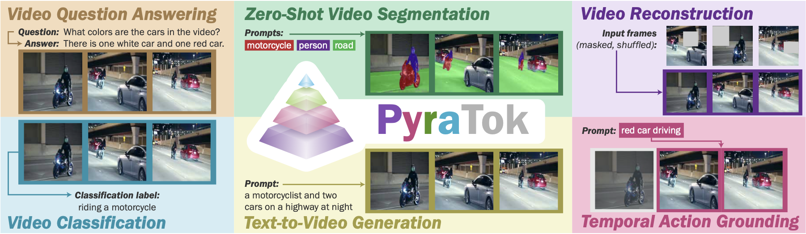
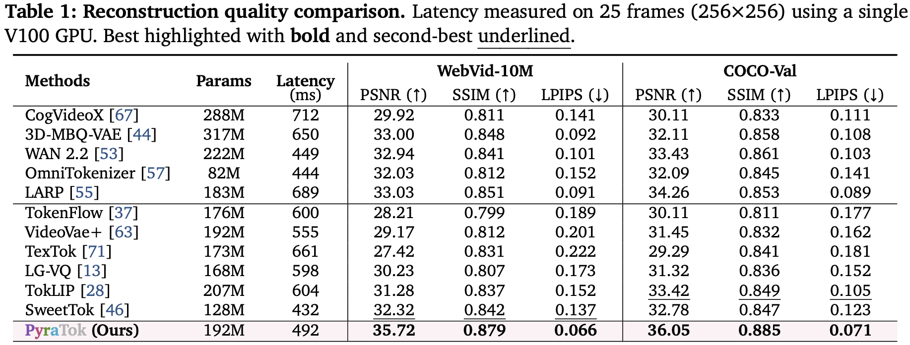
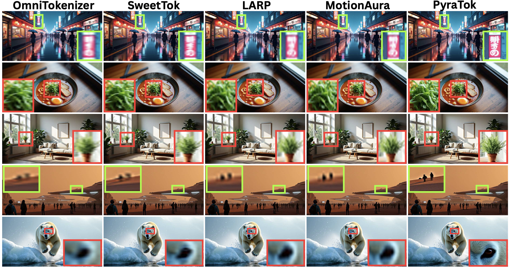
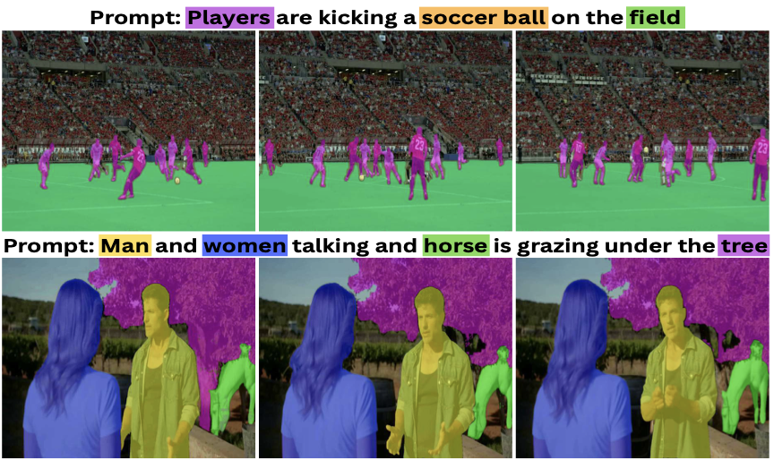
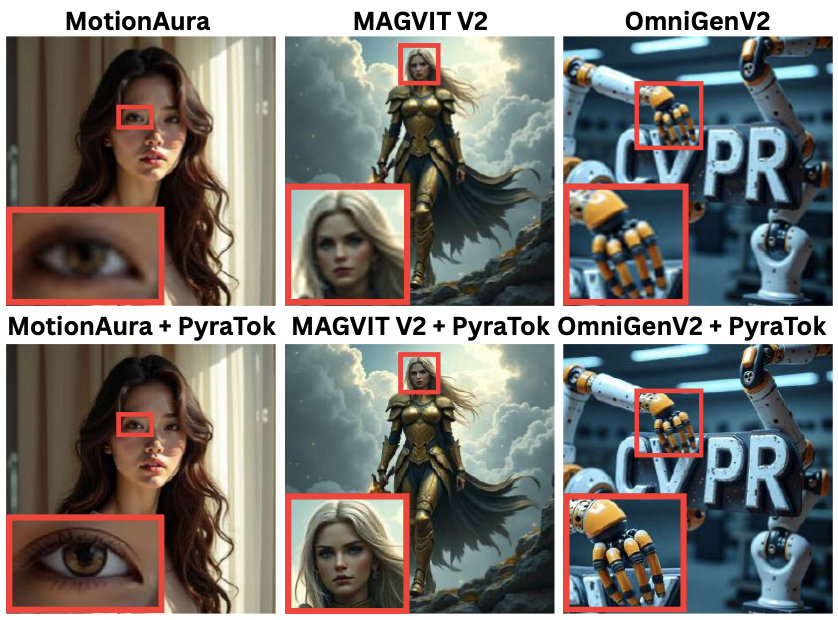

Abstract
Discrete video VAEs underpin modern text-to-video generation and video understanding systems, yet existing tokenizers typically learn visual codebooks at a single scale with limited vocabularies and shallow language supervision, leading to poor cross-modal alignment and zero-shot transfer. We introduce PyraTok, a language-aligned pyramidal tokenizer that learns semantically structured discrete latents across multiple spatiotemporal resolutions.
PyraTok builds on a pretrained video VAE and a novel Language aligned Pyramidal Quantization (LaPQ) module that discretizes encoder features at several depths using a shared large binary codebook, yielding compact yet expressive video token sequences. To tightly couple visual tokens with language, PyraTok jointly optimizes multi-scale text-guided quantization and a global autoregressive objective over the token hierarchy.
Across ten benchmarks, PyraTok delivers state-of-the-art video reconstruction, consistently improves text-to-video quality, and sets new zero-shot performance on video segmentation, temporal action localization, and video understanding, scaling robustly to up to 4K/8K resolutions.

✅ Contributions
- Multi-scale semantically aligned VAE. We introduce PyraTok, a multi-scale semantically aligned Video VAE that couples spatiotemporal quantization with dual semantic alignment, enabling coarse-to-fine understanding and efficient video generation.
- LaPQ quantization. PyraTok leverages LaPQ, a novel language-aligned pyramidal quantization framework, designed to hierarchically encode multi-scale video representations through lateral encoder connections at each stage. Our design enables efficient use of a large ∼48K token vocabulary, with up to 95% codebook utilization.
- Dual semantic alignment. We propose a dual semantic alignment strategy that injects text-conditioned priors at every LaPQ level (local alignment) and refines them with an autoregressive objective over the sequence of quantized tokens (global alignment). This jointly enforces token-level grounding and sequence-level coherence, preventing semantic drift across scales and time.
- Hierarchical semantic codebook loss. We further introduce a hierarchical semantic codebook loss that ties a shared binary codebook to text embeddings and preserves semantic consistency across pyramid levels through stage-wise KL regularization.
Quantitative Results

Comparison across ten benchmarks shows PyraTok’s multi-scale quantization and dual alignment jointly raise reconstruction fidelity, video segmentation, and zero-shot action localization metrics while maintaining strong codebook utilization.
Qualitative Results

The main visualization contrasts coarse-to-fine latent decoding and shows how PyraTok preserves temporal dynamics across pyramid levels.
High-resolution reconstructions
1080p reconstruction
4K reconstruction
Zero-shot segmentation

PyraTok’s language-aligned hierarchy yields sharper zero-shot segmentation masks compared to single-scale tokenizers.
Text-to-video alignment

MagvitV2 + PyraTok
MotionAura + PyraTok
OmniGenV2 + PyraTok
BibTeX
@article{susladkar2026pyratok,
title={PyraTok: Language-Aligned Pyramidal Tokenizer for Video Understanding and Generation},
author={Susladkar, Onkar and Prakash, Tushar and Juvekar, Adheesh and Nguyen, Kiet A. and Jang, Dong-Hwan and Dhillon, Inderjit S. and Lourentzou, Ismini},
journal={IEEE/CVF Conference on Computer Vision and Pattern Recognition (CVPR)},
year={2026},
doi={10.48550/arXiv.2601.16210},
url={https://arxiv.org/pdf/2601.16210v2}
}